Portretschilderes in Zutphen
Met hart en ziel geschilderd.
In mijn atelier aan de IJsselkade schilder en teken ik portretten in opdracht, stillevens en tekeningen. Een portret van iemand die u dierbaar is? Bel me gerust.
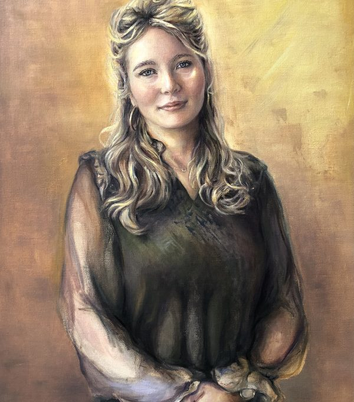
Portretten in opdracht
Uw kind, kleinkind, partner of ouder, geschilderd of getekend. Ik werk met hart en ziel aan elk portret, tot het echt de persoon is die u kent. Vertel me wat u voor ogen heeft.
Bespreek uw portret: 06 13 03 61 97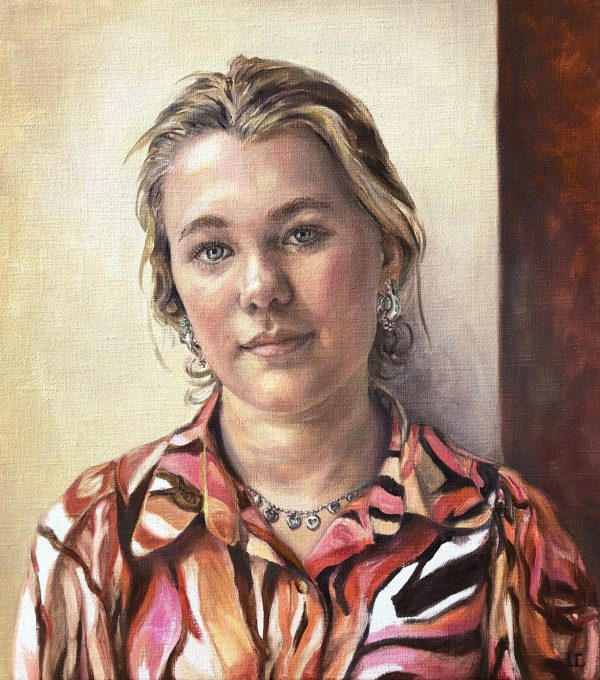
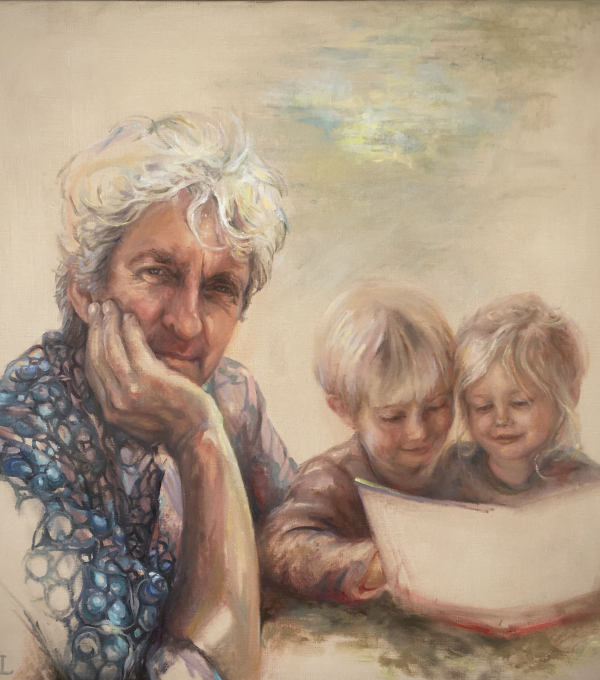
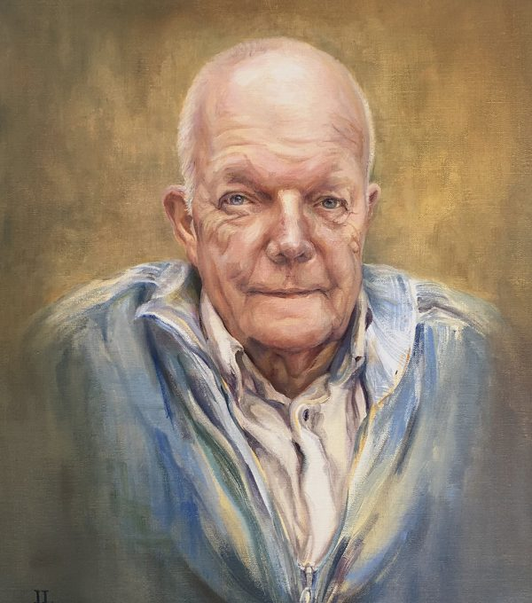
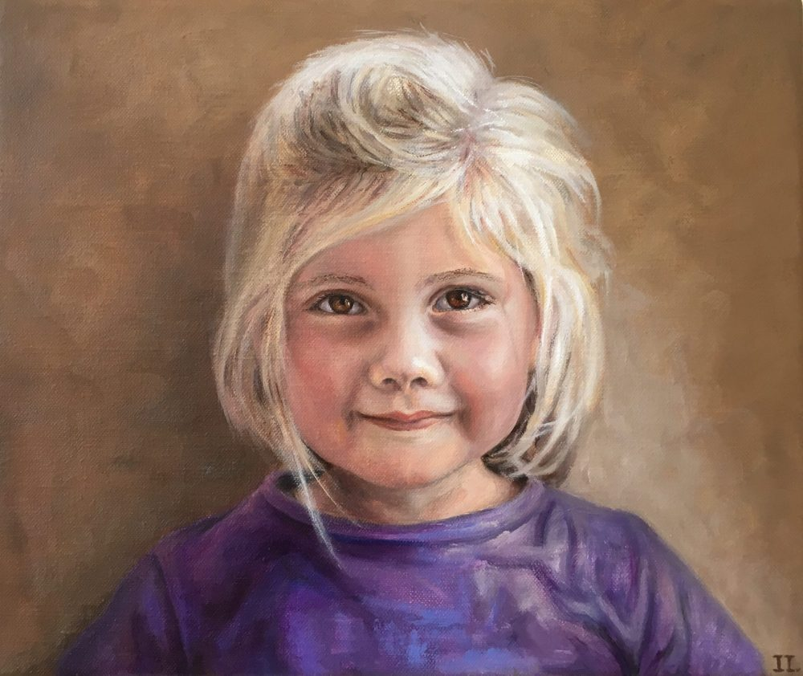
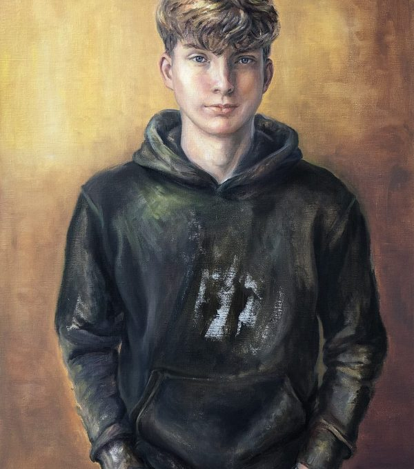
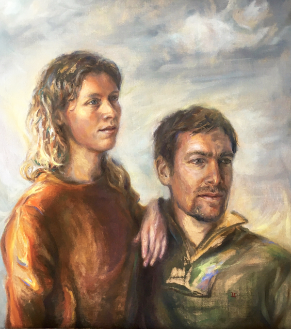
Een portret blijft. Het hangt er nog als de kinderen groot zijn.
Ik maak portretten in olieverf of als tekening. Bel of mail, dan bespreken we samen de mogelijkheden.
Sterren op het doek
Bij 'Sterren op het doek', met René Froger en Özcan Akyol, werd ik uitgenodigd om René Froger te portretteren. Het begon met een voorstudie in potlood.
Radio Gelderland interviewde me over mijn deelname.
Schilderijen
Stillevens van alledaagse dingen: een paprika, een tulp, een citroen met een atalanta erop. Een deel van mijn werk is te koop. Vraag gerust welke schilderijen beschikbaar zijn.
Vraag naar werk dat te koop is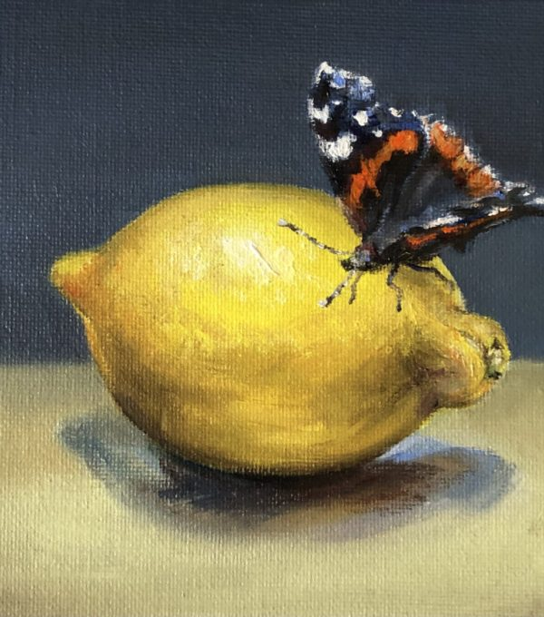
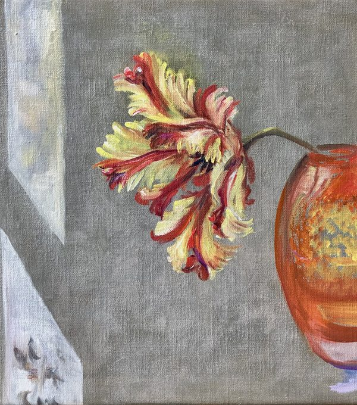
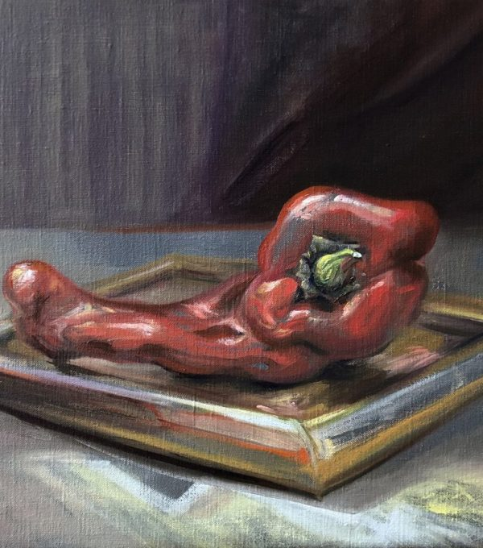
Tekeningen
Met alleen potlood en papier: zachte lijnen, een lach, een pluk haar. Een getekend portret van een baby of kleinkind is een cadeau dat blijft.
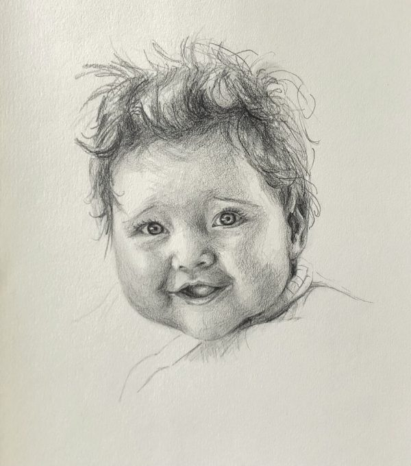
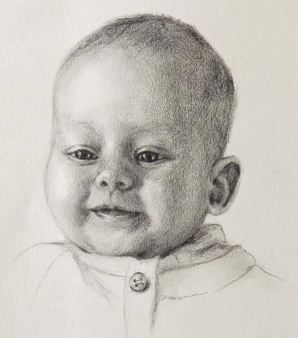
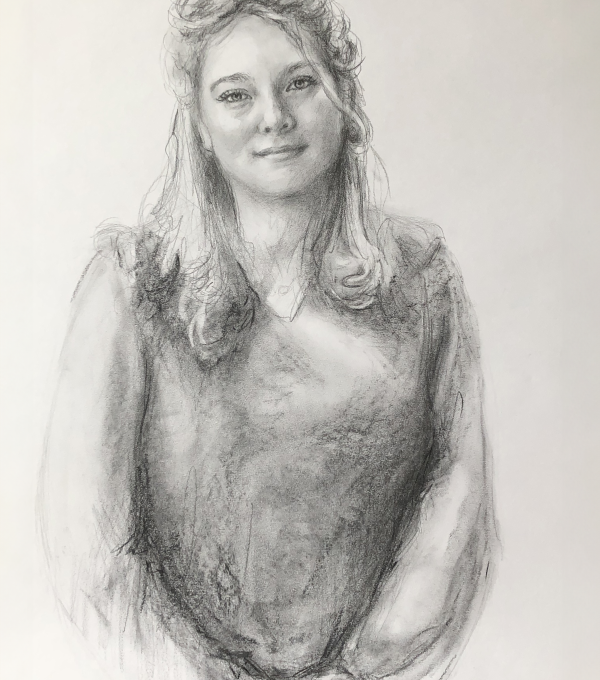
Een atelier aan de IJssel
Mijn atelier is een paradijselijke plek, waar ik met hart en ziel werk aan tekeningen, schilderijen en portretten. Het ligt in een karakteristiek pand, een rijksmonument aan de IJsselkade in de Hanzestad Zutphen.
Zelf leren schilderen
Ik geef ook schilderlessen. Wilt u weten wat er mogelijk is? Bel of mail me, dan vertel ik er graag meer over.
- Atelier
- IJsselkade 15
7201 HC Zutphen - Bellen of mailen
- 06 13 03 61 97
info@irmgardlamers.nl